Specialist consultations, emergency care and a dedicated kidney dialysis center, delivered with patient safety and accurate treatment at its heart.
Appointment: 01788 95 35 33Book a Health CheckGet Your ReportWe are committed to providing top-quality healthcare. We work with dedication, placing the utmost importance on patient safety, accurate treatment, and compassionate care.
Our services include specialist consultations, emergency medical care, dialysis, diagnostic services, inpatient facilities, operating theaters, pharmacy services, and other essential healthcare provisions.
With the aim of ensuring advanced medical care at an affordable cost, we stand by you and your family through modern medical facilities and patient-centric services.
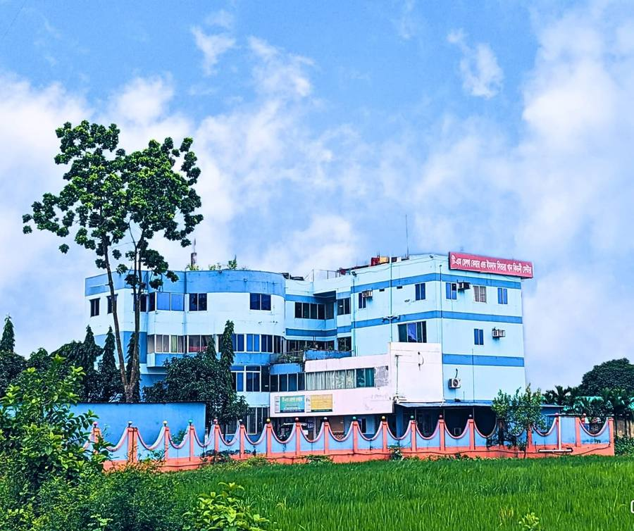
Experienced doctors across many departments.
Prompt care when it matters most. Ambulance (24 Hours): 01782 80 66 55
A dedicated center on the 2nd floor. Kidney Dialysis Office: 01303 92 49 72
Pathology and imaging under one roof.
Inpatient wards and operation theatres.
Essential medicines available in-house.
A collection of our success comes from working together with our clients, partners, and dedicated team members from all over the world.
At T-M Hospital & Kidney Dialysis Center, we are proud to achieve meaningful, proven, and continuously growing results for our T-M Hospital family.
Your trust, support, teamwork, and dedication inspire us to do better every day and continue building a stronger future in healthcare.
Best of luck to our entire T-M Hospital family! Wishing everyone continued success, happiness, and a brighter future ahead.
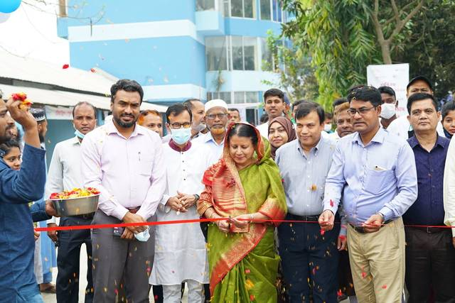
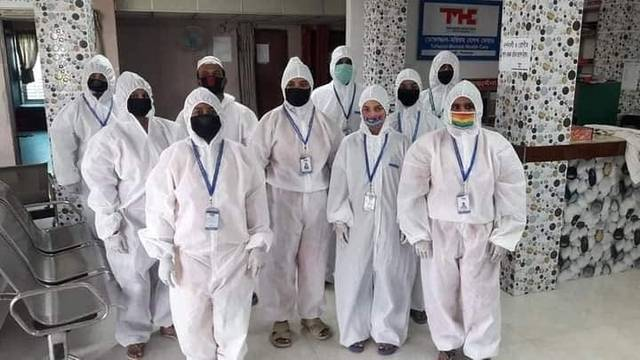
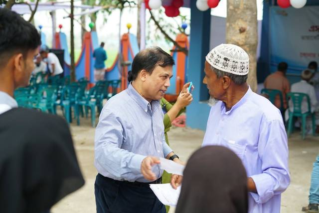
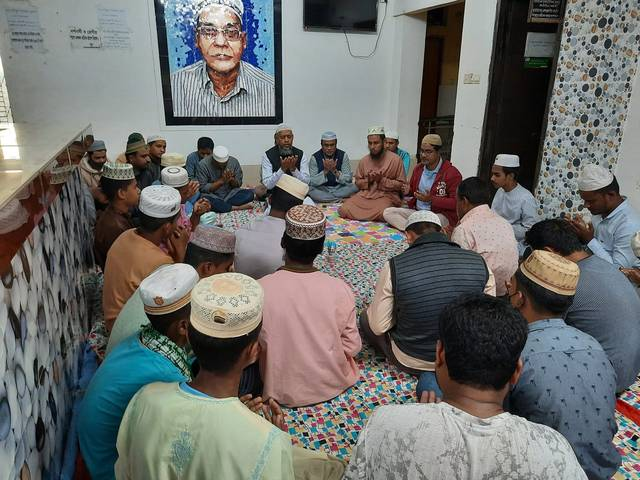
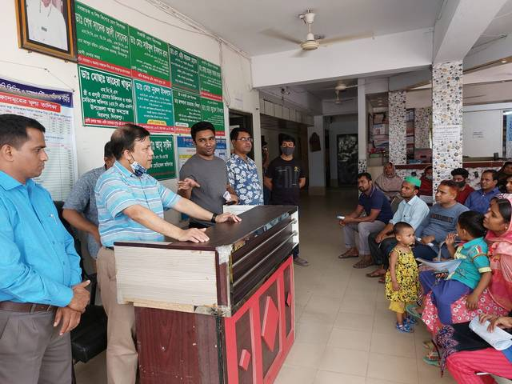
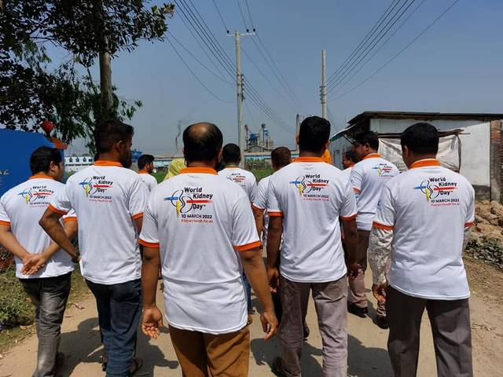
T-M Hospital and Kidney Dialysis Center
BGB Camp Road, Bhimalpur More, Phulbari, Dinajpur.
Appointments & Hotline Office: 01788 95 35 33
Ambulance Service (24 Hours): 01782 80 66 55
Top-quality healthcare at an affordable cost.
We are committed to providing top-quality healthcare, with dedication to patient safety, accurate treatment and compassionate care. Through modern facilities and patient-centric service, we aim to make advanced medical care available at an affordable cost.
Safe, careful practice in every ward.
Evidence-based diagnosis and care.
Every patient treated with kindness.
Quality care within reach of everyone.
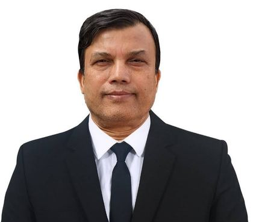
Managing Director (MD)
T-M Hospital and Kidney Dialysis Center and Sonar Bangla Foundation was established in 2011 at Bhimolpur, adjacent to the BGB Camp Road in Phulbari Upazila, Dinajpur District. Since its inception, our sole mission has been to bring reliable, modern, affordable, and compassionate healthcare to people’s doorsteps.
For over a decade, we have been providing medical care with integrity, sincerity, and professionalism. We are continuously working to ensure safe and high-quality treatment for every patient by combining the expertise of specialist doctors and skilled healthcare personnel with modern medical technology and patient-centric care.
Our services include consultations with specialist doctors, 24-hour MBBS medical care, modern diagnostic facilities, kidney dialysis, general and specialized surgeries, emergency medical care, and a range of other health services. We treat every patient with respect, empathy, and the utmost care.
Today, T-M Hospital and Kidney Dialysis Center stands as a trusted healthcare institution for the people of Phulbari and the surrounding areas. The trust and affection of the people represent our greatest achievement, and we remain committed to ensuring quality healthcare for all in the future through advanced technology, a skilled workforce, and compassionate service.
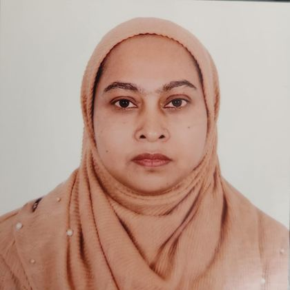
Director
A dedicated community leader committed to supporting social development, humanitarian initiatives, and the well-being of communities in both the United States and Bangladesh.
“Since 2011, my journey with the hospital has been filled with trust, care, and meaningful experiences. The dedicated doctors, nurses, and staff have always made patients feel supported and valued. I am grateful for the care and commitment I have experienced over the years, and I look forward to seeing the hospital continue to grow and serve the community.”
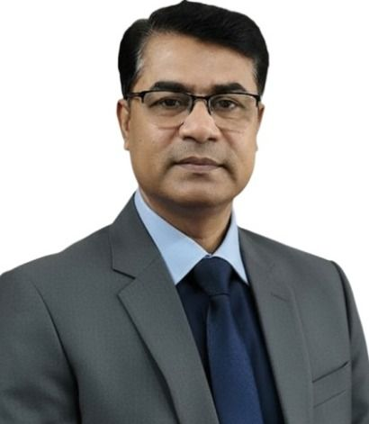
Director
T-M Hospital and Kidney Dialysis Center and Sonar Bangla Foundation, Phulbari, Dinajpur, Bangladesh.
Dedicated to serving the community with compassion, commitment, and a vision for a healthier and better future.
“Since 2011, my journey with the hospital has been filled with trust, care, and meaningful experiences. The dedicated doctors, nurses, and staff have always made patients feel supported and valued. I am grateful for the care and commitment I have experienced over the years, and I look forward to seeing the hospital continue to grow and serve the community.”
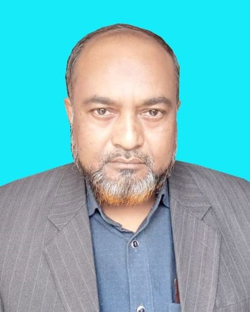
Director
T-M Hospital and Kidney Dialysis Center, Phulbari, Dinajpur, Bangladesh.
Dedicated to serving the community with compassion, commitment, and a vision for a healthier and better future.
“Since 2011, my journey with the hospital has been filled with trust, care, and meaningful experiences. The dedicated doctors, nurses, and staff have always made patients feel supported and valued. I am grateful for the care and commitment I have experienced over the years, and I look forward to seeing the hospital continue to grow and serve the community.”
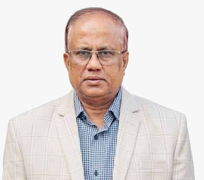
Director
MBBS, DCH, FCPS (Pediatrics)
Professor of Pediatrics & Neonatology
Dinajpur Medical College Hospital, Dinajpur
Principal Professor Dr. SK Sadek Ali (Sadek) is an experienced and respected pediatric specialist in Dinajpur. With extensive expertise in Pediatrics and Neonatology, he is trusted by patients and families from Dinajpur and neighboring districts for accurate diagnosis, compassionate care, and modern treatment solutions.
As Director of T-M Hospital & Kidney Dialysis Center since 2011, he has played an important role in the hospital’s journey of providing quality healthcare services to the community. His dedication, leadership, and commitment to patient-centered care continue to guide the hospital toward a healthier future.
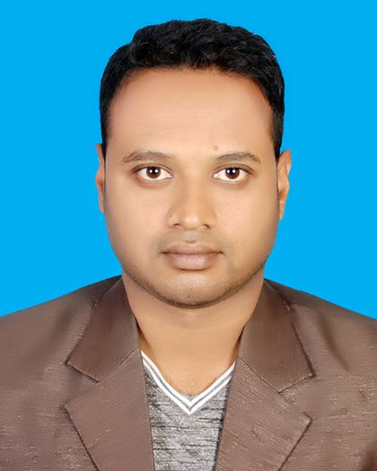
Manager
T-M Hospital & Kidney Dialysis Center
“Since 2011, T-M Hospital & Kidney Dialysis Center and Sonar Bangla Foundation has been dedicated to providing compassionate, reliable, and quality healthcare services to the community. As part of this journey, I am proud to contribute to the hospital’s growth and continued commitment to patient care.”
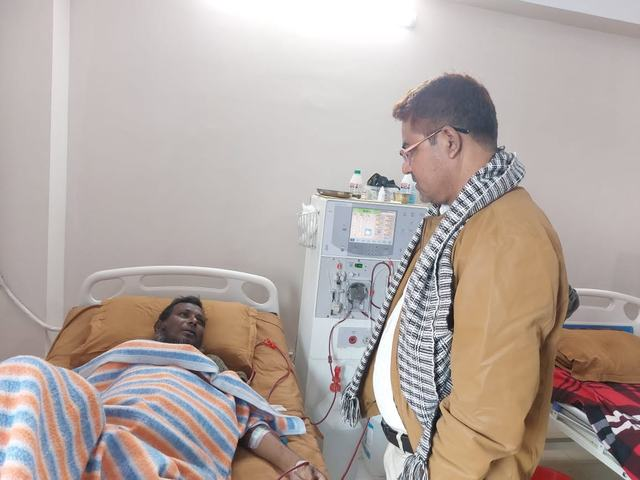
Director
Sonar Bangla Foundation Bangladesh (SBFB)
Dinajpur Center
T-M Hospital & Kidney Dialysis Center
Better Healthcare • Better Life
Emergency & OPD
Kidney Dialysis Center
Operation Theatre
Inpatient Wards
T-M Hospital & Kidney Dialysis Center
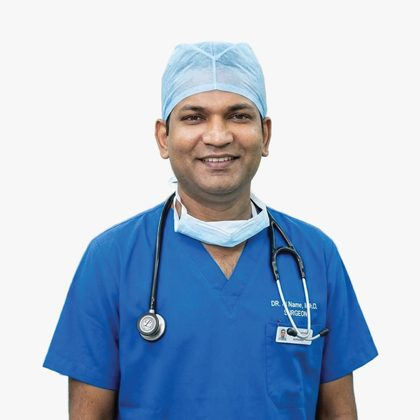
Surgeon
MBBS (Dhaka) | BMS (Health) | FCMPS (Surgery)
Specialist in General, Laparoscopic & Cancer Surgery
Assistant Professor, Department of Surgery
Dinajpur Medical College & Hospital
Every Friday
9:00 AM – 3:00 PM
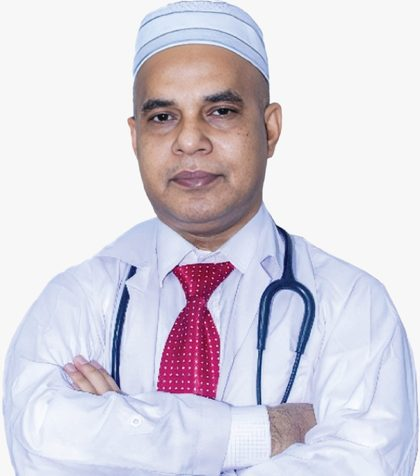
Specialist Urological Surgeon
MBBS, MS (Urology)
Specialist in Kidney, Urethra, Bladder, Prostate, Testicular, and Sexual Disorders
Assistant Professor, Department of Urology
Dinajpur Medical College Hospital
Every Friday
5:00 PM – 9:00 PM
Obstetrician and Gynecologist
MBBS, BCS (Health), MCPS (Obstetrics & Gynecology)
Registrar, Department of Gynecology & Obstetrics
Rangpur Medical College Hospital
BMDC Reg. No. A-06400
Every Friday and Tuesday
4:00 PM to 9:00 PM
For an appointment, please contact 01788 95 35 33.
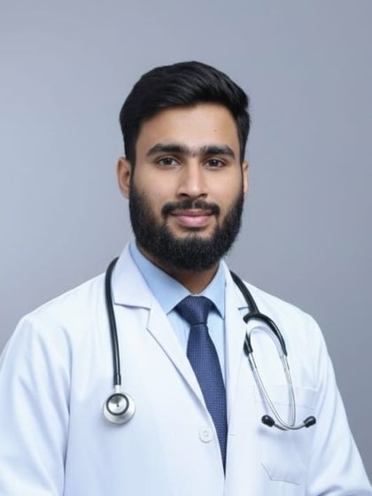
Residential Medical Officer (RMO)
Experienced in Medicine
Degrees & Training
MBBS (R-U), CCD, PGT (Ultra), GP-Doc (Dermatology)
BMDC Reg. No.: A-122523
We are delighted to welcome our new RMO Doctor to the T-M Hospital family.
Since 2011, T-M Hospital has been committed to providing trusted healthcare services to our community.
Thank you for being a part of our journey.
Together, we continue to serve with care, compassion & commitment.
TM Hospital – Kidney Dialysis Accounts Management System
Experiences shared by our patients and families.
“Sample story: replace with a real patient’s words.”
— Patient name, Dialysis
“Sample story: replace with a real patient’s words.”
— Family member, Child Healthcare
“Sample story: replace with a real patient’s words.”
— Patient name, Surgery
Careers at T-M Hospital & Kidney Dialysis Center | Dinajpur Phulbari
At T-M Hospital & Kidney Dialysis Center, Dinajpur, your career is more than just a job—it’s a journey of compassion, growth, and meaningful impact.
We believe in the strength of diversity, the power of teamwork, and the importance of inclusion in delivering exceptional healthcare.
Every team member, regardless of background or experience, is valued for their unique skills, dedication, and contribution.
Join our growing healthcare family and become part of our mission to deliver reliable, modern, affordable, and compassionate healthcare.
Together, let’s transform healthcare in Bangladesh!
Apply for a jobBoard of Director
I am delighted to welcome you to the career page of T-M Hospital & Kidney Dialysis Center, Dinajpur.
At T-M Hospital, we believe that our greatest strength lies in our people. Our dedicated healthcare professionals and support teams work together to provide quality, compassionate, and patient-centered care to our patients and their families. We are always looking for talented, passionate, and committed individuals who share our vision of improving healthcare services.
We offer diverse career opportunities across both clinical and non-clinical departments. Whether you are an experienced professional or just beginning your journey in healthcare, T-M Hospital provides opportunities to learn, grow, and build a meaningful career.
Our career opportunities may include:
At T-M Hospital, we value diversity, innovation, teamwork, integrity, and continuous professional development. We believe every team member has an important role in creating a positive healthcare experience and making a meaningful difference in people’s lives.
I warmly invite you to explore our current career opportunities and become a part of our growing healthcare family.
Join T-M Hospital and be a part of our journey toward transforming healthcare in Bangladesh.
Together, let us build a healthier community through dedication, compassion, and excellence.
Doctors and medical staff.
Administration and support teams.
Nursing and patient care teams.
T-M Hospital & Kidney Dialysis Center, Dinajpur
Affordable Health For Everyone.